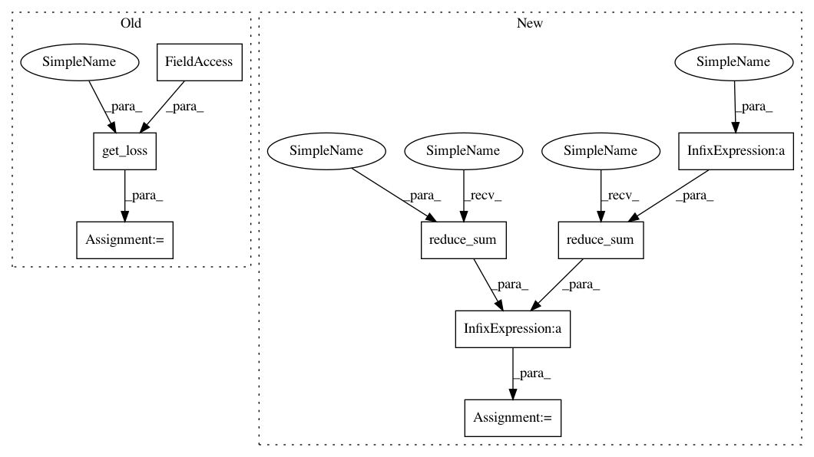

161eec75e3ce12307e74553f4360064b32bdc4fc,thumt/models/seq2seq.py,,model_graph,#,16
Before Change
maxlen=tf.shape(features["target"])[1]
)
)
loss = get_loss(features, params, ce, tgt_mask)
return loss
After Change
maxlen=tf.shape(features["target"])[1]
)
)
loss = tf.reduce_sum(ce * tgt_mask) / tf.reduce_sum(tgt_mask)
return loss
In pattern: SUPERPATTERN
Frequency: 3
Non-data size: 8
Instances
Project Name: THUNLP-MT/THUMT
Commit Name: 161eec75e3ce12307e74553f4360064b32bdc4fc
Time: 2017-12-31
Author: playinf@stu.xmu.edu.cn
File Name: thumt/models/seq2seq.py
Class Name:
Method Name: model_graph
Project Name: THUNLP-MT/THUMT
Commit Name: 161eec75e3ce12307e74553f4360064b32bdc4fc
Time: 2017-12-31
Author: playinf@stu.xmu.edu.cn
File Name: thumt/models/rnnsearch.py
Class Name:
Method Name: model_graph
Project Name: THUNLP-MT/THUMT
Commit Name: 161eec75e3ce12307e74553f4360064b32bdc4fc
Time: 2017-12-31
Author: playinf@stu.xmu.edu.cn
File Name: thumt/models/transformer.py
Class Name:
Method Name: model_graph